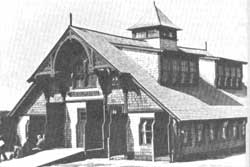
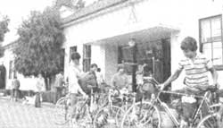
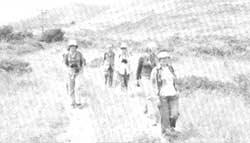
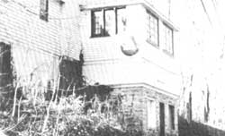
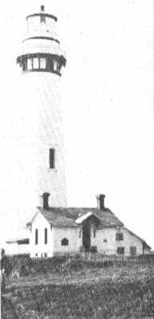
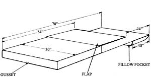

Maybe this is the year you'll want to take an adventurous, self-reliant, low-cost trip, going...
PHOTO COURTESY OF AYH, INC.
This 1870's lifesaving station on Nantucket Island is now the Star of the Sea Youth Hostel.
Vacation time-be it two days, two weeks, or two months-is downright precious to most folks, whether they follow nine-to-five routines or are self-employed and working on their own schedules. It's an opportunity to relax and renew oneself, to catch up on and (maybe!) finish half-started projects around the house, or to visit for a spell with family and friends. And if one's lucky enough, a vacation can also be a time to travel ... to see new places and experience different lifestyles.
Unfortunately, though, a quick mental tabulation of the transportation, lodging, and food expenses that an away-from-home adventure can involve will too often prompt would-be travelers to postpone (perhaps for the umpteenth time) their dreamed-of holidays. And that's a shame, because staying home isn't the only alternative to taking a costly excursion. The fact is that you and your family can have your own special vacation-in any part of the country-for fewer dollars than you probably ever thought possible.
Would you, for example, like to hike amid 90 acres of virgin forest in Georgia, and sleep (at a cost of less than $5.00 a night) in a geodesic dome? Perhaps you'd rather bicycle on country roads along the New England coast, and arrive at dusk at a restored 1870's lifesaving station on Nantucket Island (where the price of your night's lodging will be below $6.00). On the other hand, visiting Philadelphia's cultural attractions might be more your style (if so, you can call an old historic mansion, in the city's charming Fairmount Park, your temporary home for about $5.00 a night). Or maybe your vacation fantasy would be fulfilled by awakening in an old Victorian rooming house-surrounded by the ghosts of Wild West cowboys-and cooking your own hearty breakfast before tackling the powder at Colorado's Purgatory Ski Area (your overnight stay will run less than $8.00 . . . even in the winter).
Then again, you may have imagined beachcombing along the Pacific coast (and lodging in a lighthouse) . . . bunking down on a Montana ranch . . . spelunking in Ohio . . . sailing the Great Lakes ... or snorkeling in Florida. These opportunities are the stuff from which dream vacations are made. And you can create such a truly memorable, and affordable, trip ... by letting hosteling help determine your itinerary.
AN INN WITH EXTRAS
Hostels are simply inexpensive (but adequate) overnight accommodations for travelers of all ages. Of course, many Americans who've been abroad are familiar with the European system of hosteling, but most folks know very little about the U.S. counterpart, called American Youth Hostels, Inc. And that's surprising, because there's a network of about 270 of these hikers' inns in our country. Furthermore, although they aren't all as glamorous as the examples I've described, each has its own unique gifts to offer the traveler who shares the self-reliant spirit upon which hosteling is based.
Like hotels and motels, hostels provide weary wayfarers with clean places to relax, wash, eat, and sleep. However, unlike the more expensive accommodations, hostels stress the value of meeting and conversing with folks of different nationalities and backgrounds, whose outlook and experience may vary from your own.
A typical hostel consists of separate washrooms and dormitories for men and women ... as well as a communal kitchen, dining area, and living room. However, the travelers' hotels range in luxury from simple "shelter" hostels to "superior" accommodations that offer such amenities as laundry facilities, separate sleeping quarters for families, game rooms and music areas, saunas, swimming pools, canoe liveries, bicycle rentals, riding stables, cross-country ski trails, and the like.
A hostel building might be a log cabin, an old farmhouse, a suburban split-level, or a city high-rise. Many of the structures are on the national or state registers of historic places, and there are working farms, lighthouses, dude ranches, and even an old fire station to choose from. All of the dwellings offer the same basic services, yet-by virtue of each hostel's location and particular setup-every one is unique.
Furnishings in the low-cost retreats tend toward the simple and functional. Each bed will sport a mattress and several blankets, and guests are expected to bring (or rent) their own linens (see the accompanying sidebar on making a hosteler's sleeping sack). Most of the lodges have large, fully equipped kitchens available for travelers to use. (It's customary to bring along your own food, eating utensils, plate, bowl, and dish towel.) And, by preparing meals yourself, the way you like them, you can beat the high cost-and often dubious quality-of run-of-the-mill restaurant fare. (Some hostels do offer hearty, home-cooked breakfasts or dinners for an extra fee.)
Hosteling also differs from motel living in that, rather than employing desk clerks, most hostels have "houseparents"-living on or near the premises-who register guests, see that the building and grounds are kept clean and in good repair, assist travelers with information and directions, and make visitors feel welcome.
RULES OF THE HOUSE
As is the case in most group housing situations, hostels must impose certain rules in order to preserve individual rights in a community environment. Every visitor is, for example, expected to pick up after him-or herself, and to participate in general chores for a few minutes each morning. Taking out the trash or mopping the kitchen floor are typical of the duties assigned. Since all guests contribute some labor to the upkeep of the hostel, prices can be kept at a minimum without sacrificing standards of cleanliness.
Other regulations that hostelers must abide by are matters of safety and common courtesy: Most hostels observe "quiet hours" from 11:00 p.m. to 7:00 a.m. (although urban facilities generally stay open somewhat later) . . . smoking isn't permitted in kitchens, bunk rooms, or dining areas (in some cases it's restricted to the outdoors) . . . and alcohol and drugs are prohibited.
In addition to offering overnight accommodations, AYH sponsors one- to two-week hosteling tours, such as cycling . . . and hiking excursions.
PHOTOS BY BERT SCHWARZCHILD
HOW TO HITCH UP WITH A HOSTEL
Hostels were developed primarily to serve individuals traveling under their own steam, such as bikers, hikers, climbers, canoeists, and cross-country skiers. Folks journeying by private motor vehicles and public transportation are welcome, though, as long as they plan to spend their stay pursuing cultural, educational, or outdoor recreational activities.
You'll need to become a member of the American Youth Hostels, Inc. in order to register at the hikers' hotels. But anyone is welcome to join. (The word "youth" in the organization's name is misleading: People of all ages can be, and are, members.)
Annual membership rates are $7 for junior citizens (age 17 and under) and seniors (60 and up), $14 for individuals 18 to 59 years of age, and $21 for families. A life membership can be had for $140. Recognized nonprofit organizations-such as camps, church groups, or schools-may purchase an Organizational Pass, covering up to 25 people a night, for $35 a year. (See the ordering information at the end of this article.)
And anyone who'd like to give hosteling a try before becoming a full-fledged member can purchase a $2.00 introductory pass directly from one of the lodges. This pass, along with the hostel's standard fee, will buy a single night's stay.
PHOTO BY THE AUTHOR
THE SECRET LIFE OF A HOSTEL
The stone and clapboard structure pictured here-which is set on a wooded bluff overlooking the majestic Potomac River-has led a long, varied life. It was first christened "Potomac View". . . and served as a rowdy roadhouse. Later, it was an auction site . . . and the rooms were filled with fast talk and cold cash. Then, in 1962, the building settled into a comfortable middle age as the Kiwanis Youth Hostel. . . over which my husband and I preside as house-parents.
Although it is showing some signs of its long tenure as a building brimming with people, the haven still houses several hundred travelers each season. It's said that no two nights are ever the same at any hostel, and this one is no exception. Yesterday evening, for example, two trekking teenaged buddies contributed their foraged greens and berries to a community supper shared with a septuagenarian hiker, three Japanese sisters, and a cross-country bicyclist on the last leg of her journey. Tonight, while I write this, a group of weary college students (back from a day of white-water rafting) roast marshmallows and swap stories with a graying couple who are touring by car . . . a teacher from Denmark . . . and a half-dozen Boy Scouts on a two-week canoe trip. And-as often happens on summer nights-a handful of hot and hungry backpackers are seated at the table, making short work of a gallon of ice cream.
This old building perches at a spot where several well-traveled pathways meet. The 2,000-mile Appalachian Trail passes by the front door of the lodge on its course from Georgia to Maine ... the Chesapeake and Ohio Canal Towpath accompanies the river on its journey from western Maryland to Washington, D.C. . . . and the Virginia Loop Bicycle Trail pauses here to catch its breath before challenging the highlands. Here, too, the Shenandoah and Potomac Rivers join to carve their spectacular water gap through the Blue Ridge Mountains.
The area is steeped in history, as well. George Washington wandered these hills as a young surveyor. Armies of immigrants followed soon thereafter, pushing the frontier before them as they wrestled railroad iron toward the Ohio Valley. Abolitionist John Brown's ill-fated attempt to free the slaves is memorialized in Harpers Ferry National Historical Park, a scant 1-1/2 miles upstream. And various struggles for the rivers, railroads, and ridgetops-all hotly contested prizes during the Civil War-are represented by the Antietam Battlefield, which lies ten miles west.
Each hostel has its own personality, which is made up of its past, its surroundings, and the travelers who call it "home" for a short time. The character of the Kiwanis Youth Hostel was built by the saga of early westward expansion and the War Between the States, the awesome beauty of the rivers and mountains, and the diversity of its visitors . . . all voyagers searching for different islands in the same sea.
PHOTO COURTESY OF AYH. INC.
Pigeon Point Lighthouse Hostel in California.
You can find hostels in 40 of the 50 states in the U.S., with high concentrations in New England, the Mid-Atlantic region, the Great Lakes area, the Rocky Mountains, and along the Pacific Coast. Chains of hostels sometimes make it possible for a bicyclist, say, to tour for a week, staying at a different bunkhouse each night.
Hostel sites are chosen to provide the wayfarer with as wide a selection of activities as possible. Many are located along established hiking, canoeing, skiing, horseback riding, or biking trails in state and national parks. Those situated in cities were established for folks wishing to participate-at low cost-in the cultural and educational pursuits that abound in metropolitan centers. (Many larger urban areas also have "gateway hostels", at which foreign travelers tend to congregate.)
In order to find out the locations of all the U.S. hostels, you'll want to pick up a copy of the annually published AYH Handbook (free with membership . . . but nonmembers can order the guide for $1.75, plus 75 cents shipping and handling, from the address given at the end of this article).
The publication provides pertinent information about each hostel . . . including the address and how to get there, houseparents' names, sleeping capacity, extra facilities, fees, and-when applicable-historical facts about the building or the area. In addition, useful data concerning distances to nearby attractions, public transportation, grocery stores, and bicycle repair shops are given.
(The handbook also notes any special restrictions that a hostel may have.) "
If, after leafing through the AYH guidebook, you plan out a dream vacation that you just can't pass up, be sure to make advance reservations to guarantee your space. To do so, just send a deposit (consisting of 50% of the total cost) to each hostel you plan to visit . . . and be sure to include a stamped, self-addressed envelope so the lodge can confirm your deposit and let you know if the fee has changed. You should plan each day's excursion so that you'll arrive at the hostel between 5:00 and 8:00 p.m., since most of the facilities are closed from midmorning until late afternoon. Remember, too, that the maximum stay in any one location is three nights, unless prior arrangements are made with the house-parents.
Finally, although they are attractively inexpensive, hostels are more than just low-cost places to catch a few winks. They can be the focus of an alternative travel experience. If you require luxury and absolute privacy, if you prefer to pay others to provide services for you, or if you like to spend your holidays in passive pursuits . . . hosteling probably won't fit your lifestyle. But if you're a person who wants to stay active, prefers to be outdoors, likes to be self-reliant, enjoys meeting and sharing with others, and relishes the idea of experiencing a truly memorable vacation on a shoestring budget . . . you're almost sure to enjoy hosteling. Whether you tour Alaska, canoe in the Ozarks, or bicycle along the Pacific Coast, your trip will be filled with new experiences . . . and opportunities to make new friends.
EDITOR'S NOTE: Membership in AYH, Inc. not only enables you and your family to enjoy hosteling privileges at more than 5,000 hostels throughout the world and entitles you to a free handbook . . . it also allows you to take advantage of discounted prices on outdoor recreational books, travel information, and national and regional newsletters… and offers the chance to participate in AYH-sponsored trips. To become a member, send your name, address, date of birth, and appropriate fee (plus 75 cents shipping and handling) to Mary Bowling, Kiwanis Youth Hostel, Dept. TMEN, Route 2, Box 304, Knoxville, Maryland 21758. (To receive only the AYH book, send $1.75, plus 75 cents shipping and handling, to the same address.)
Another organization that offers an alternative to conventional travel is the Elderhostel Association (Dept. TMEN, 100 Boyleston Street, Suite 200, Boston, Massachusetts 02116). Among other activities, this nonprofit group organizes week-long academic programs, year round, at college campuses in the U.S. and Canada. People 60 years of age and over (or those whose spouses or companions qualify) can participate in the mini-courses. Write Elderhostel for more information.
In addition, folks who can't take a vacation at the moment but who would enjoy opening their homes to foreign travelers might want to contact U.S. Servas (Dept. TMEN, 11 John Street, Room 406, New York, New York 10038). The group provides lodging for visitors to this country by placing them in American homes for stays of up to three days.
THE SHEET SLEEPING SACK
The one-piece sheet-and-pillow-case combination illustrated here is a convenient and compact way to carry bed linens while hosteling. (The snoozing sack could also serve as a sleeping bag liner.) You can order one for $10.00-plus $2.00 shipping and handling-from AYH, Inc., Dept. TMEN, 1332 I Street N.W., Suite 800, Washington, D.C. 20005 . . . but it's easy to make your own.
To construct the pocket bed, you'll need a large piece of soft, washable material . . . such as an old sheet. After adding a few inches to each "finished" dimension to allow for seams and hems, stitch up a sack that measures 30" X 78". (If you'd like a little extra roominess, you might want to include gussets along the sides and foot of your bedding bag.) Once the main sack is sewn, attach an 18" X 30" pocket to the underside of the bottom layer at the open end of the bed liner.
Now, when you're ready to bed down, simply slide the pillow into its slipcover, fold the upper flap back over the blanket, and snuggle into your pack-along sheets!
|
 |
 |
 |
|
 |
 |
 |